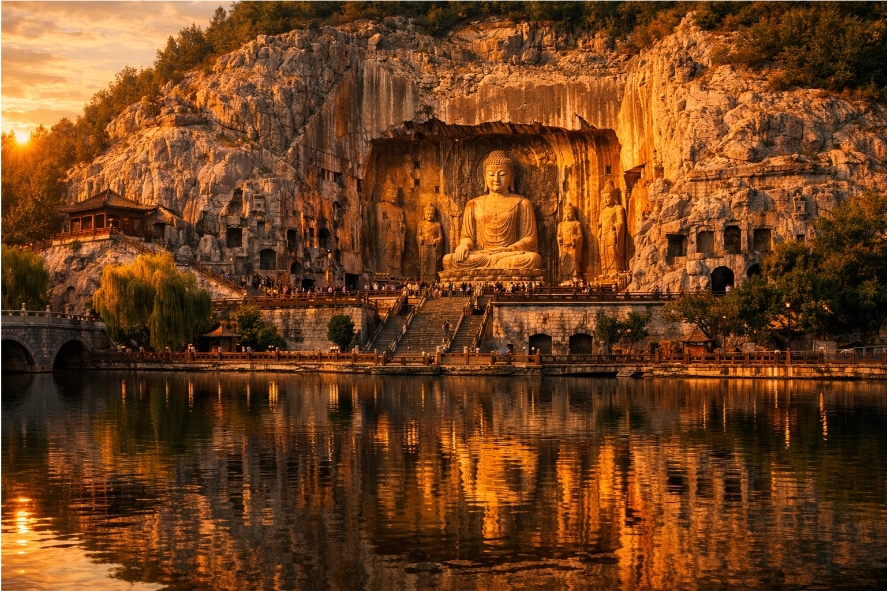
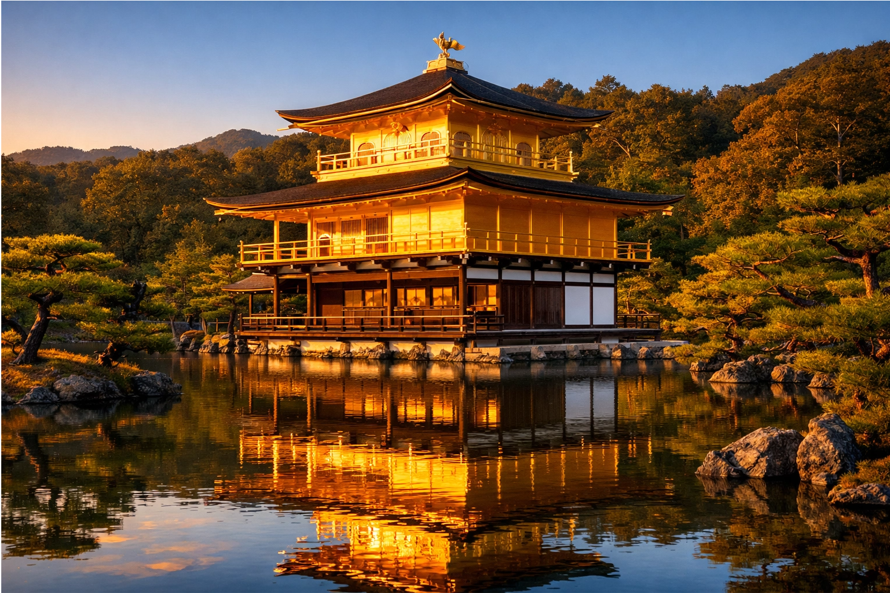
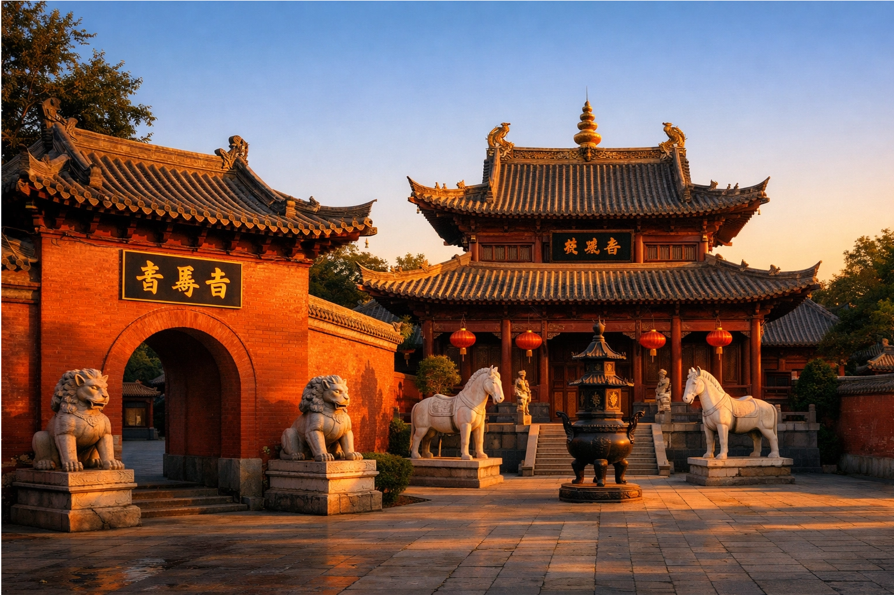
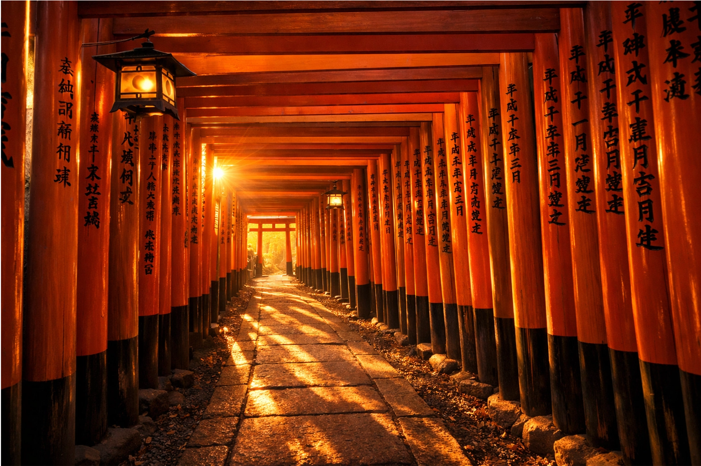
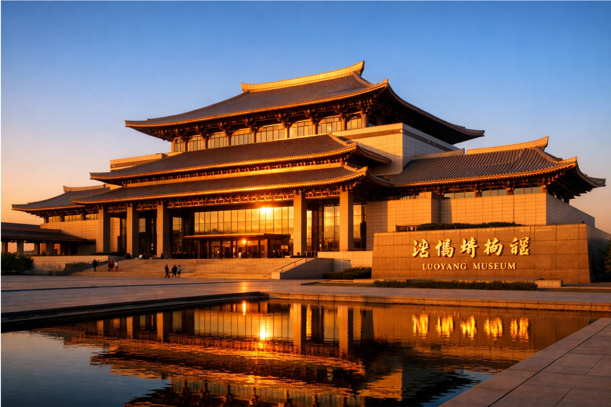
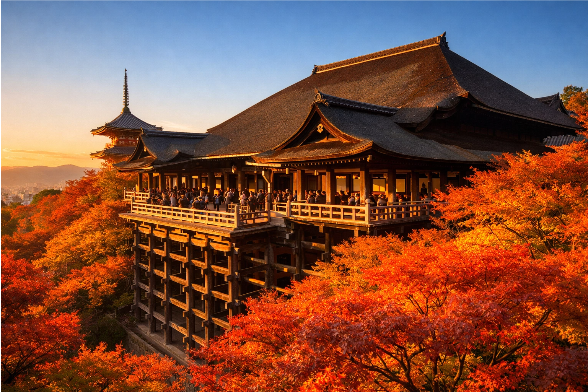

Cradle of Chinese Civilization Meets Heart of Japanese Tradition
Where ancient Buddhist heritage and imperial elegance encounter Zen serenity and seasonal beauty — exploring deep East Asian cultural kinship
Luoyang, known as the "Divine Capital" and capital of thirteen Chinese dynasties, is the birthplace of Chinese Buddhism and home to the Longmen Grottoes, White Horse Temple, and the Luoyang Museum — symbols of religious enlightenment, imperial splendor, and cultural continuity.
Kyoto, Japan's ancient capital for over a thousand years, preserves exquisite temples like Kinkaku-ji (Golden Pavilion), Fushimi Inari Taisha, and Kiyomizu-dera — icons of Zen aesthetics, Shinto spirituality, and seasonal harmony.
Both cities served as centers of imperial power, Buddhist transmission, and artistic refinement. Their shared East Asian heritage creates a profound cultural resonance across centuries.

UNESCO World Heritage site with over 100,000 Buddhist statues carved into cliffs — masterpiece of Chinese stone carving art.

Zen temple covered in gold leaf, reflecting in its pond — epitome of Japanese aesthetic harmony and Muromachi period elegance.

China's first Buddhist temple, established in the Eastern Han Dynasty — birthplace of Chinese Buddhism and Silk Road spiritual exchange.

Thousands of vermilion torii gates leading up the mountain — iconic Shinto shrine dedicated to the god of rice and prosperity.

Houses treasures from ancient capitals, including Tang Dynasty tri-color pottery — guardian of China's imperial artistic legacy.

Wooden stage overlooking Kyoto — UNESCO site symbolizing Heian period architecture and panoramic seasonal beauty.
From Luoyang's White Horse Temple introducing Buddhism to China, to Kyoto's Zen temples refining it into Japanese culture — shared spiritual journey across East Asia.
Tang Dynasty's opulent court culture influenced Nara/Kyoto's Heian elegance — parallels in poetry, painting, and seasonal appreciation.
Peony festivals in Luoyang and cherry blossom viewing in Kyoto — both celebrate nature's beauty and cultural continuity through annual rites.